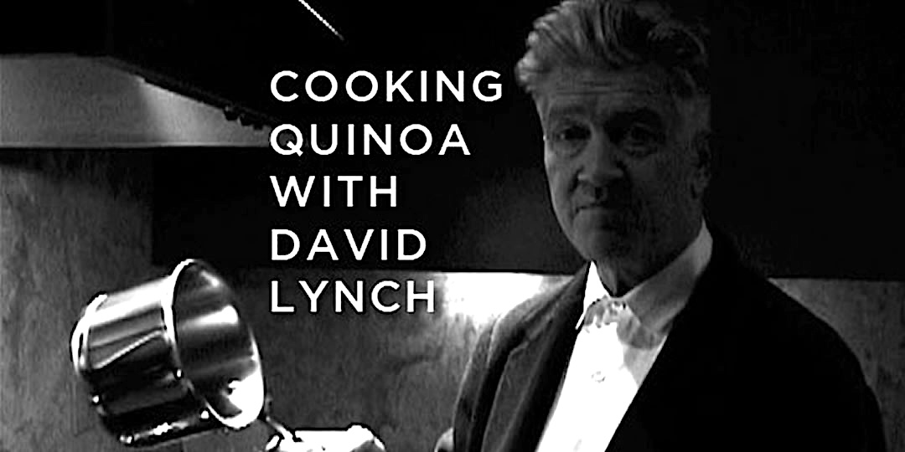

David Lynch
This is his quinoa.

David Lynch, master surrealist filmmaker, is also a skilled cook of niche grains. Follow this recipe and you'll be able to eat like
the master of the macabre himself.
Ingredients
- 1/2 cup of quinoa
- 1 cup of water
- 1 pinch of sea salt
- 1 vegetable bouillon cube
- 1 cup of broccoli spears
- 1 teaspoon soy sauce
- 1 teaspoon olive oil
Steps
- Rinse your quinoa well in a mesh strainer.
- Add the quinoa to a small saucepan, along with 1 cup of water, 1 veggie bouillon cube, and a pinch of sea salt. Bring to a boil. Reduce the heat, cover, and cook for 7 minutes.
- Add the broccoli, cover again, and cook for 3 more minutes. Check the quinoa. If there is still water in the pan cook for 5 more minutes or until the water is absorbed.
- Transfer to a bowl. Add a Braggs Liquid Aminos and extra virgin olive oil to taste. Prepare for another Twin Peaks marathon, and enjoy!